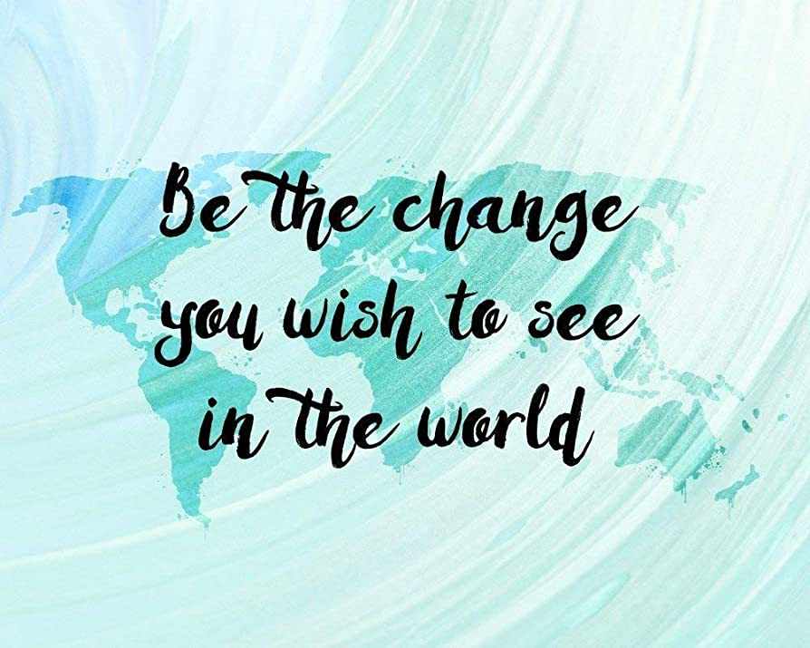

About the Man, the Myth, and the Machine

Areas of Expertise
- Business systems analysis and process improvement
- Workflow design and optimization
- Training development and instructional design
- Technical and end-user documentation
- Change management and user adoption
- Cross-functional stakeholder collaboration
What I Do
- Translate complex technical concepts into clear, actionable guidance
- Develop training programs, job aids, and support resources
- Design and document scalable business processes
- Bridge the gap between technical teams and business users
- Identify opportunities for efficiency, automation, and continuous improvement
Strengths
You have the rare quality of being able to see another person's point of view and changing your mind.
- A man I met on a bus in Spain
- Communication and knowledge sharing
- Systems thinking and problem solving
- Organization and process design
- Building consensus across diverse teams
- Turning ambiguity into clarity
My Approach
You have the ability to listen to someone, truly understand what they are saying what they want, and then telling them really what they want- A woman that just needed to be pointed in the right direction
- People-first and user-focused
- Practical, thoughtful, and solution-oriented
- Committed to continuous learning and improvement
- Focused on creating tools and processes that deliver lasting value
Some Things that Inspire me...
